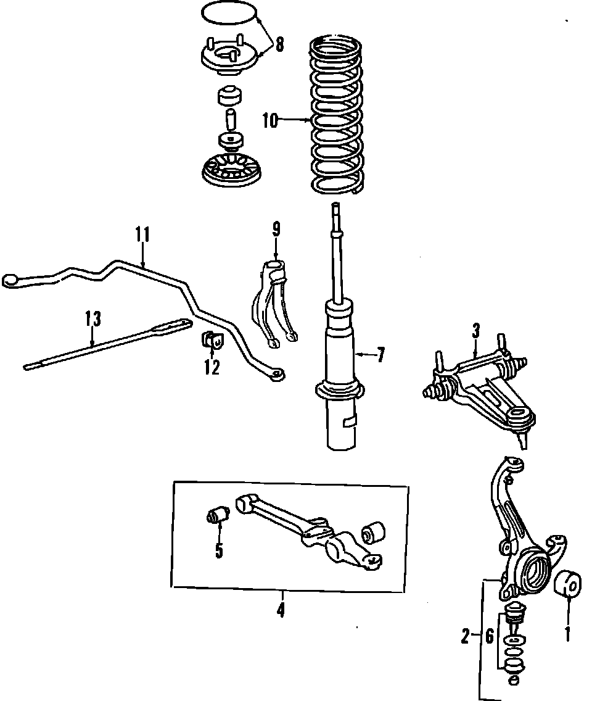
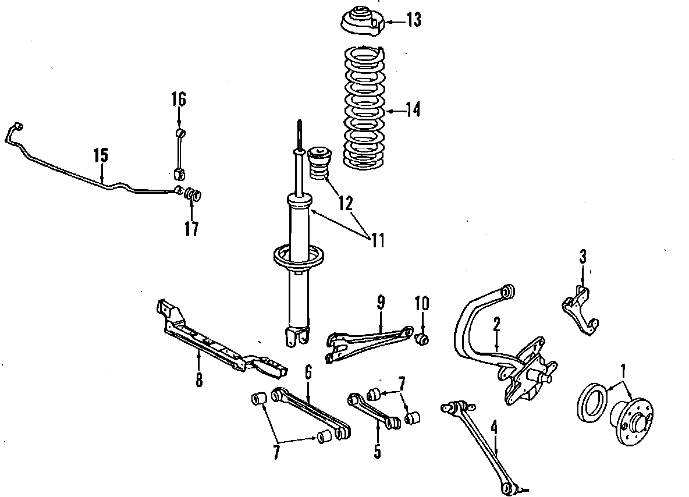
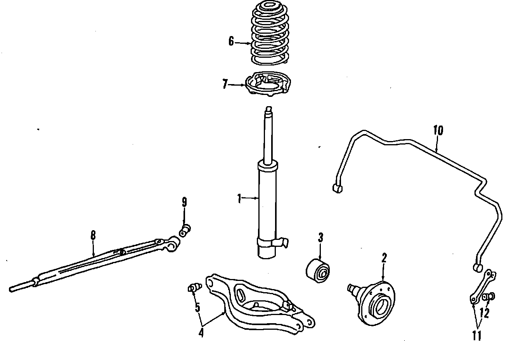

Operation CHARM
: Car repair manuals for everyone.
Home
>>
Acura
>>
1987
>>
Legend Sedan V6-2494cc 2.5L SOHC FI
>>
Parts and Labor
>>
Steering and Suspension
>>
Suspension
>>
Images
Images
Front Suspension:

Rear Suspension, 2 Door:

Rear Suspension, 4 Door:
